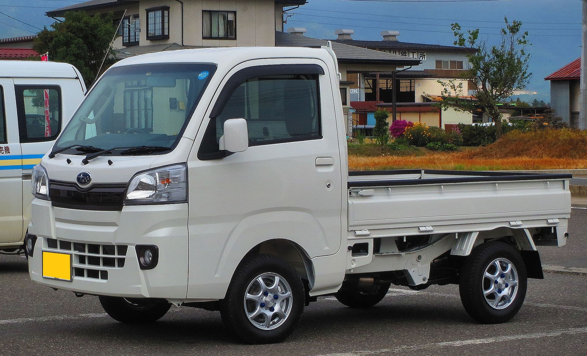

Subaru Sambar

This iconic brand has been making these delightful mini trucks for
the Japanese Domestic market since the 60's. This working mans truck
has gone through multiple versions but some features have become
staples.
Rear mounted 1200 cc 3 cylinder engine
A KS4 turbo charger
A wider 145 tire
No matter the configuration, this japan mini truck is not so mini when
it comes to power and fun.